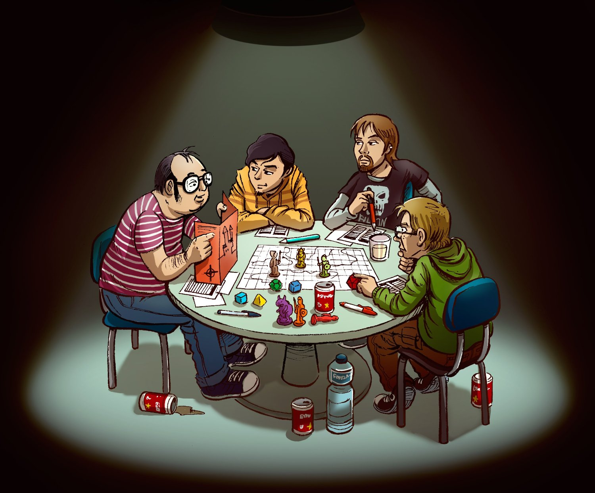

Un jeu de rôle est une technique ou activité, par laquelle une personne interprète le rôle d'un personnage (réel ou imaginaire) dans un environnement fictif. Le participant agit à travers ce rôle par des actions physiques ou imaginaires, par des actions narratives (dialogues improvisés, descriptions, jeu) et par des prises de décision sur le développement du personnage et de son histoire.
Il existe plusieurs formes de jeu de rôle, qui peuvent être plus ou moins distinguées par leurs fonctions. Le jeu de rôle peut être notamment une technique thérapeutique (psychologie), une méthode pédagogique, une méthode d'analyse ou bien une activité récréative.
Parmi les formes à but récréatif, on distingue communément les jeux enfantins (spontanés) des jeux de rôle ludiques (à règles formelles), tels que le jeu de rôle dit « sur table » qui est un jeu de société, le jeu de rôle grandeur nature dans lequel les joueurs réalisent physiquement leurs actions et les jeux vidéo de rôle (dont les MMORPG) joués sur support informatique.
Ce jeu, dans sa forme traditionnelle, rassemble les joueurs durant la partie autour d'une table, avec communément pour accessoires des dés et feuilles de papier. Ce jeu rassemble aussi des joueurs pour des parties sur Internet, et il a inspiré d'autres formes de jeux de rôle ludiques tels que le grandeur nature et certains jeux vidéo.
Lien vers une vidéo explicative...